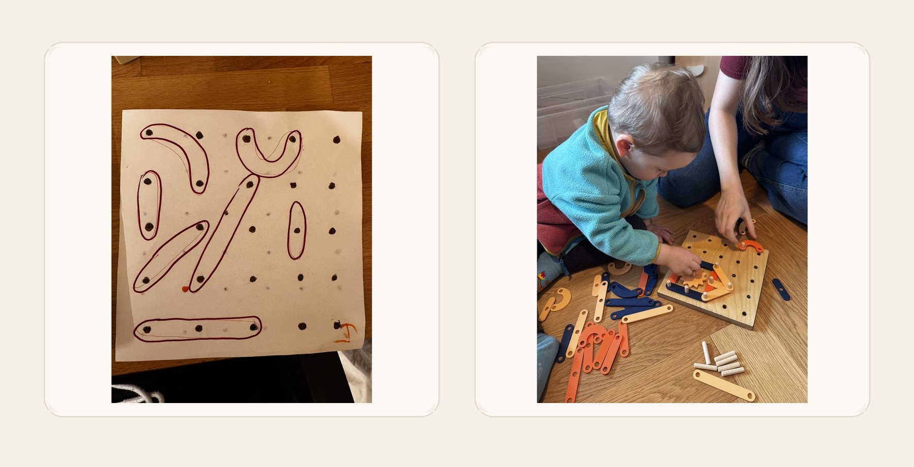
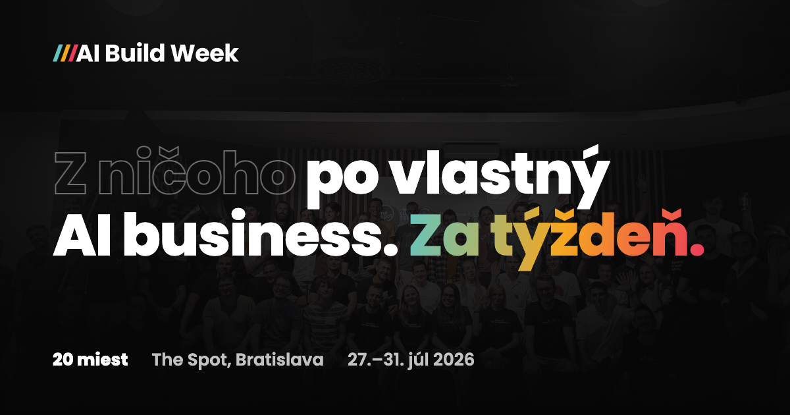
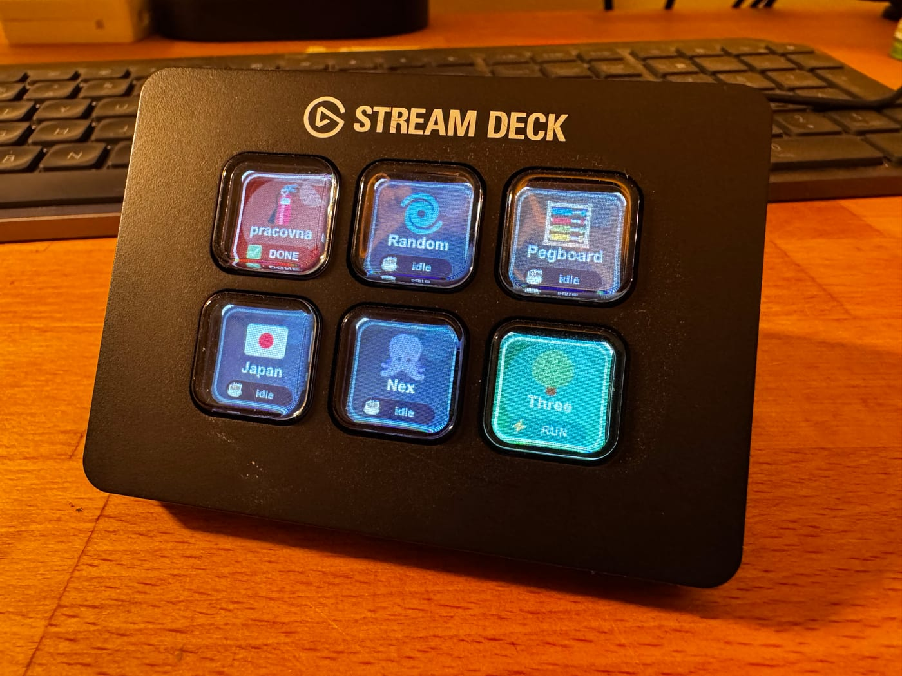

Don’t shout at your AI agent
Give it tools, checks, or memory. Anger is not a product strategy.
Ten years at Slido. Now building products, small tools, and occasionally a corner of the internet that makes a sound.
Give it tools, checks, or memory. Anger is not a product strategy.
The missing word was product.
The best feature is usually the one that reliably saves time.
It starts in culture long before it shows up in pixels.
 YouTLDRAnti-clickbait for YouTube
01
YouTLDRAnti-clickbait for YouTube
01
 Žltá stopaWalking Slovakia, one trail at a time
02
Žltá stopaWalking Slovakia, one trail at a time
02
 Mood RadioA tiny station for a specific feeling
03
Mood RadioA tiny station for a specific feeling
03

Pegboard ToyFrom sketch to something you can play 04
AI Build WeekA week for making the useful thing real 05
CMUX DeckPhysical buttons for agent work 06